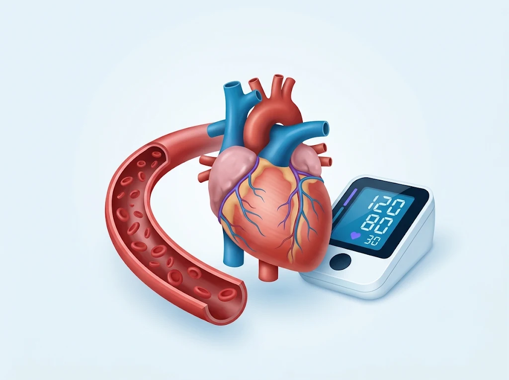
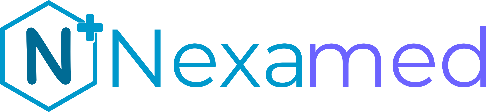
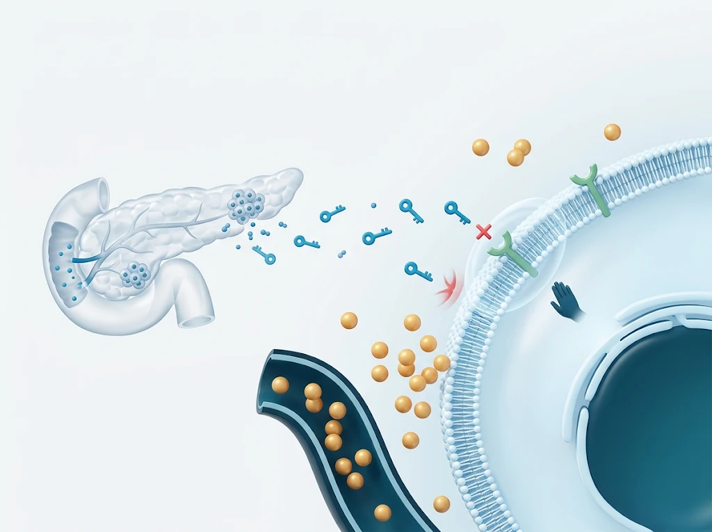

Enfermedades cardiovasculares
Hipertensión arterial: lo que necesitas saber
Aprende qué significa tener presión arterial elevada, cuáles son sus riesgos y cómo prevenir complicaciones.
Leer artículo
Información médica clara y confiable para comprender mejor tu salud y tomar decisiones informadas.

Enfermedades cardiovasculares
Aprende qué significa tener presión arterial elevada, cuáles son sus riesgos y cómo prevenir complicaciones.
Leer artículoEnfermedades cardiovasculares
Aprende qué significa tener presión arterial elevada, cuáles son sus riesgos y cómo prevenir complicaciones.
Leer artículo
Salud metabólica
Conoce los principales factores de riesgo de la diabetes tipo 2 y qué habitos pueden ayudarte a prevenirla.
Leer artículoHábitos saludables
Descubre cómo influye el sueño en tu salud y por qué descansar adecuadamente es fundamental.
Leer artículo